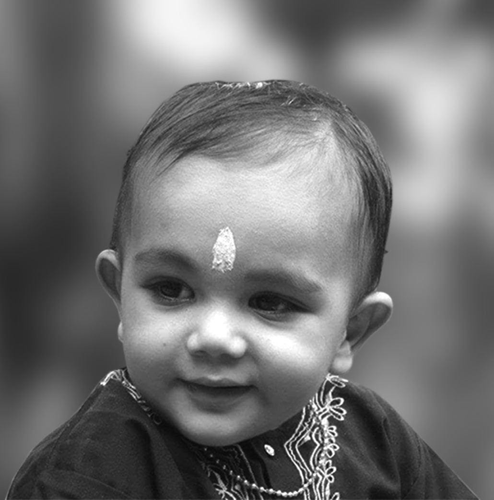
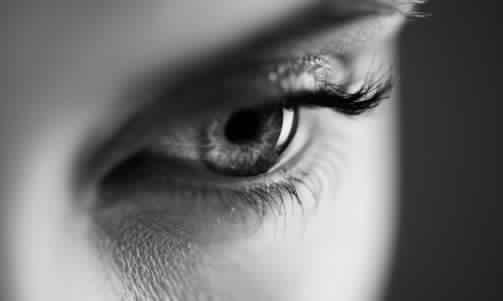

Ayurveda is a complete health science. It is expanded into 8 specializations about 2000 year ago. Kayathanthra deals in internal medicine, the Balathanthrain obstetrics, gynecology and pediatrics, the Salyathanthra in surgical management, the Salakyathanthra in eye, ear, nose, throat, brain, head & neck, the Vishathanthra in toxicology, the Rasayanathanthra in immunology, geriatrics and rejuvenation and the Vajeekaranathanthra in andrology and sexology.
Rishi Charaka –Pl insert Charaka image Charaka is often known as the Father of Medicine in India. His most famous work is the Charaka Samhita. One of Charaka's most famous quotes was, "Health and disease cannot be predetermined and human life can be prolonged or increased by paying attention to lifestyle." Charaka was one of the physicians to introduce concepts of digestion, metabolism and sexual problems to Ayurveda. Charaka stated that the body functions because it contains three doshas: Vata, Pitta and Kapha. The doshas are produced when dhatus (tissues) act upon food eaten. Each body produces a different amount of each dosha for the same quantity of food eaten. This is what makes one body different from another. Rishi Sushruta–Pl insert Charaka image Sushruta was an ancient Ayurvedic physician and one of the main contributors of Sushruta Samhita. Sushruta was known as the Father of Plastic Surgery. The Sushruta Samhita consists of 184 chapters. It lists around 1100 illnesses and 700 medicinal plants. Sushruta was the first to introduce diagnostic instruments which were later modified in construction to form the modern endoscope. The Sushruta era was known as the Golden Age of Surgery because he took surgery in ancient India to new heights with his work.Why Ayurveda?
Ayurveda provides compassionate, individualised health careand 100% natural medicines
Why Ayurveda?
Ayurveda is based on the principle that the body is made up of 5 elements – space, air, water, fire and earth.
Why Ayurveda?
Ayurveda is a pseudoscientific system of medicinewith historical roots
in the Indian subcontinent.
Ayurveda
SUPUTHREEYAM
(SPECIALTY CLINIC FOR ANTE & POST NATAL CARE)
Suputhreeyam is an initiative, which is a complete health strategy including medicine and advice starting before conception and continues till the child achieves his milestones successfully.

AGE WISE BIFURCATION OF PEDIATRIC TREATMENTS
6months-5 years:
5 year-10 years:
10-16yrs of age:
Treatment therapies:
PRE-PREGNANCY
POST PREGNANCY – SOOTIKA PARICHARYA
The main focus is to calm the vata which aggravates during the whole procedure of pregnancy and delivery. Adding to that sleep deprivation and fatigue that comes from feeding and nourishing a newborn There is laxity in muscles which generates during the process of delivery.- - Life style changes
- - Dietary changes
- - Yoga and meditation
- - Medicines
- - Counseling
- - Massages
- - Relaxation therapies-sheerodhara etc
- - HERBAL WATER BATH
- - DIET AND LIFESTYLE
SUCHETHAS
(SPECIALTY CLINIC FOR STRESS AND STRAIN)
An integrated approach as solution which has been successfully practiced over a century

SUNAYANAM
(SPECIALTY CLINIC FOR EYE DISORDERS)
An out-patient wing for ‘eye’ with renowned specialist in the field of eye (Netra Ayurveda) examines patients regularly in the "netraroga panel" once in a month.

SUJEEVANAM
DIABETES AND LIFE STYLE DISORDERS
We blend traditional wisdom and modern knowledge in patient care has been very innovative in developing treatment protocols and novel formulations in Ayurvedic arena for more than a century.
We take up this responsibility to eliminate Diabetic complications with a social commitment to provide a disease free society, which itself is the motto of the institution.
SUSHRUTHAM
We blend traditional wisdom and modern knowledge in patient care has been very innovative in developing treatment protocols and novel formulations in Ayurvedic arena for more than a century.
We take up this responsibility to eliminate Diabetic complications with a social commitment to provide a disease free society, which itself is the motto of the institution.
SUSHRUTHAM
The Keraleeya Ayurveda Samajam, prepares over 300 traditional formulations in Ayurveda based on the great texts of Ayurveda. About 100 rare preparations of medicines developed by great experts of Samajam based on traditional Ayurveda prepared in Samajam for effective cure. All levels and details of production of the medicine are strictly based on the age old sacred knowledge of Ayurveda. Samajam medicines are always in full, strictly conforming to its composition. Stringent quality control effectively executed at every stage of the preparation, right from procurement of raw materials to its packing gives Samajam medicines its value. The quality, strength and effectiveness of the Ayurvedic preparations of Samajam is unquestionably unparalleled. All classical Ayurvedic are manufactured and made available to the public, as per their need.